Portfolio
Galerie
Vous trouverez ici un aperçu de ce que nous faisons et quelques projets sur lesquels nous avons travaillé.
-
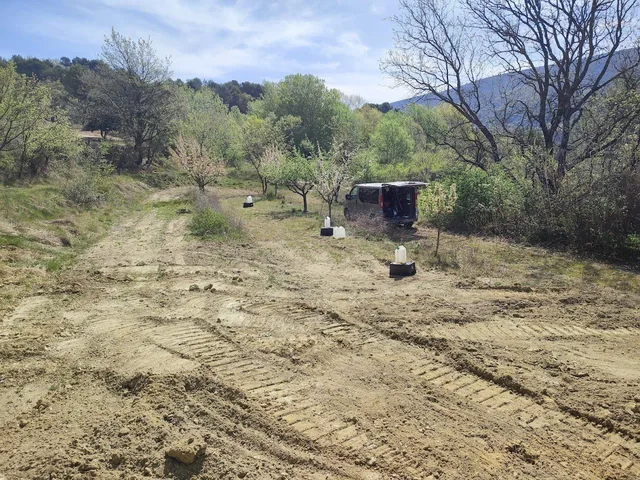
Étude de sols : terrain d'assainissement non collectif -
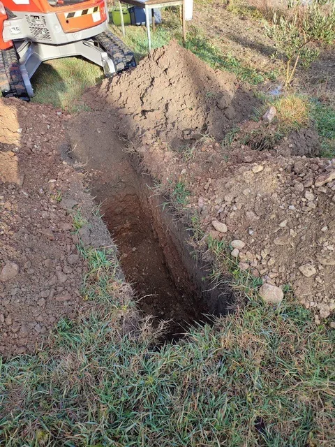
Tranchée d'épandage — assainissement non collectif -
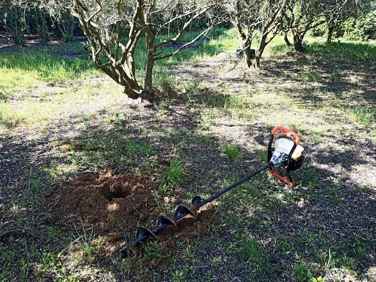
Sondage à la tarière manuelle — étude de sols -
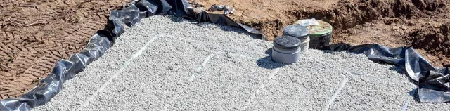
Filière d'infiltration en cours de réalisation -

Atelier de forage en verger -
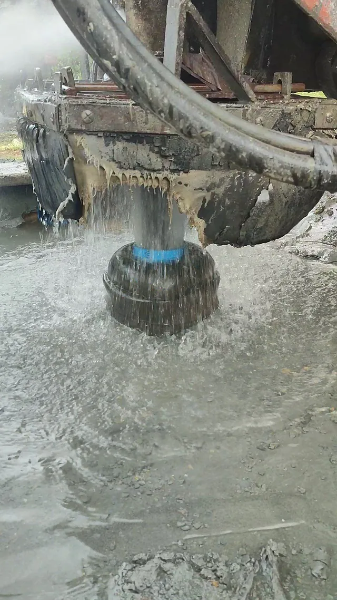
Venue d'eau en tête de forage -
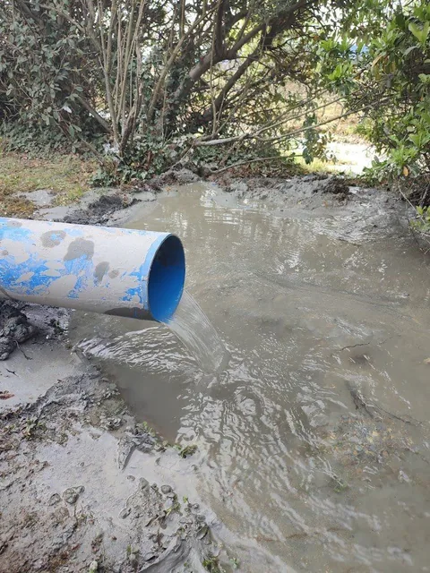
Rejet des eaux de forage -
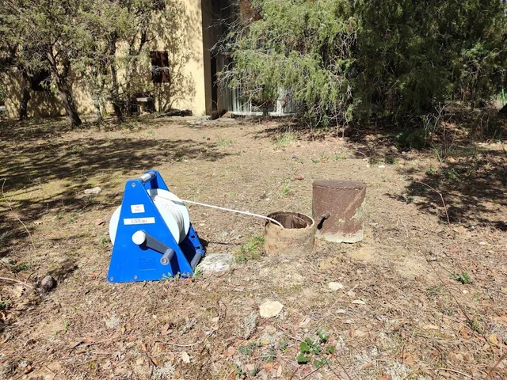
Sonde piézométrique en bordure de captage -
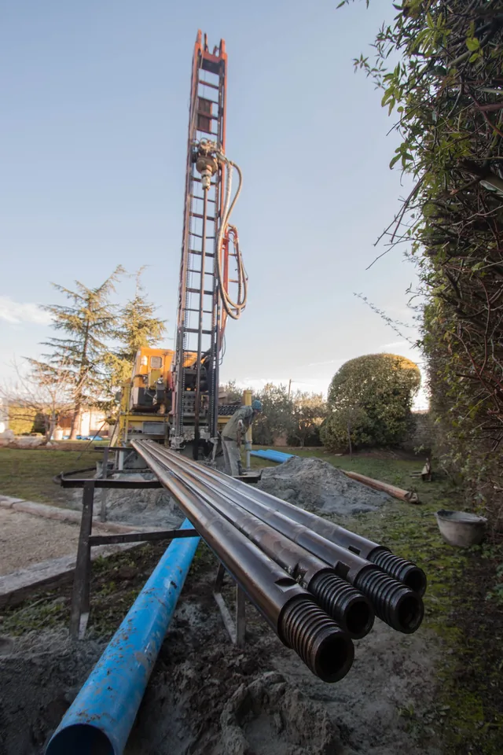
Mât de forage et tubages -
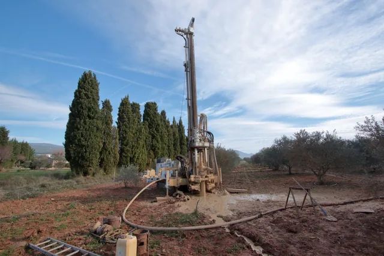
Forage d'eau en terrain arboré -
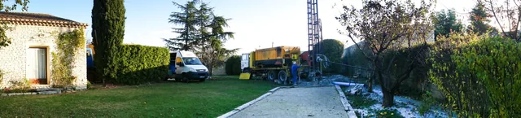
Forage chez un particulier -

Fossé empierré de gestion des eaux pluviales -
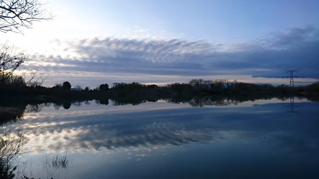
Plan d'eau — eaux superficielles -

Canal — eaux superficielles


Aucune photo dans cette catégorie.
Nos prestations vous intéressent ? Nous sommes là pour vous aider !
Nous voulons en savoir plus sur votre projet pour vous soumettre une offre technico-économique adaptée à vos besoins.